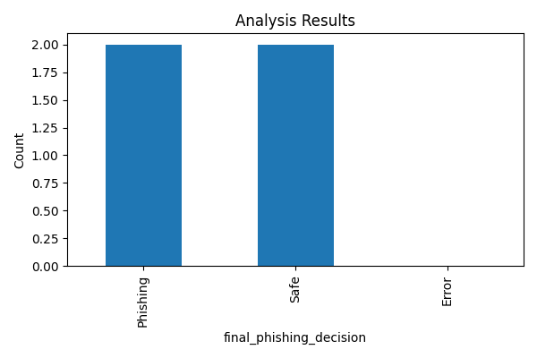
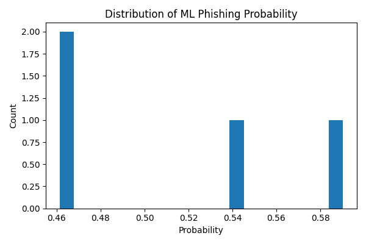

Generated: 2025-12-12 21:45:05
Project: Hybrid ML & Rule-Based Phishing URL Detection System
Author: SYED AHAMED WASIK (24MCA052) — MCA, Jamal Mohamed College, Trichy
Summary: This report lists the results of a batch analysis of URLs using a hybrid approach combining a supervised machine learning model and a rule-based detection engine. The ML model used features such as URL length, domain length, numeric counts, presence of suspicious tokens (login, verify, secure), and structural features (subdirectories, query parameters).
Practical Impact: The system helps prevent credential theft and financial loss by flagging suspicious URLs. It can be used by students, faculty, or staff to check links before clicking. Organizations can integrate this as a pre-filter in email gateways or web-proxy systems.


The detailed CSV is saved as: batch_analysis_results.csv